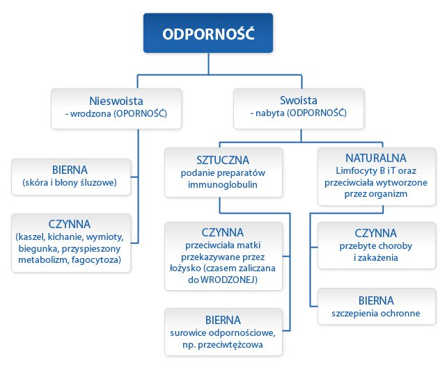
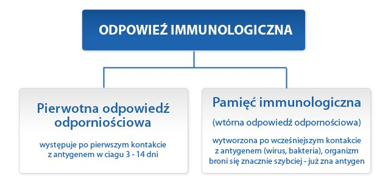
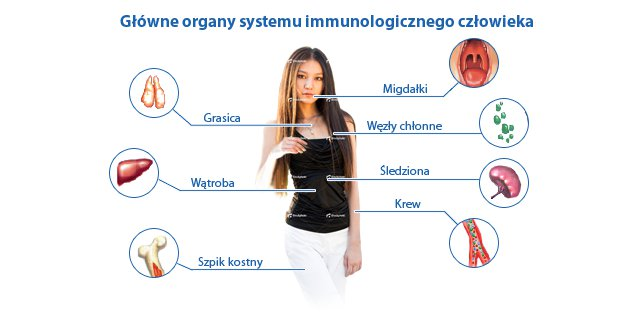
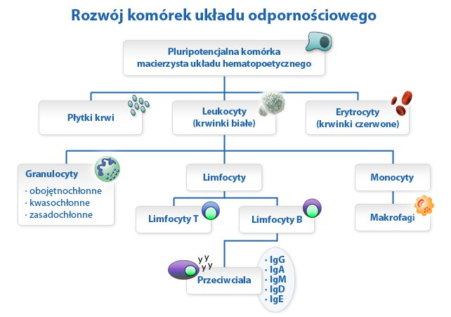

Szybki test ryzyka
w kierunku pierwotnych niedoborów odporności
Wykonaj testZ pewnością każdy z nas przechodził kiedyś przeziębienie, grypę, zapalenie zatok czy górnych dróg oddechowych. Czasami mamy problem również z raną powstałą w wyniku drobnego skaleczenia, która nie chce się szybko zagoić. Zdarzenia te są skutkiem infekcji, które pojawiły się w organizmie.
Infekcje oraz wszelkiego rodzaju zakażenia powodowane są przez drobnoustroje chorobotwórcze (inaczej patogeny, czyli twory biologiczne lub mikroorganizmy wywołujące chorobę), którym udaje się przełamać systemy obronne organizmu. Do czynników chorobotwórczych zaliczamy:
Rozwój choroby zależy od specyfiki danego czynnika chorobotwórczego (jego aktywności i dawki) oraz od poziomu odporności pacjenta. Jeżeli źródło infekcji znajduje się blisko miejsca wniknięcia do organizmu czynników chorobotwórczych – mówimy o zakażeniu miejscowym (np. zakażenie rany). Jeżeli zakażeniu towarzyszą objawy ogólnoustrojowej reakcji zapalnej organizmu – mamy do czynienia z sepsą (posocznica).
Nasz organizm, już od urodzenia, ma kontakt z bardzo dużą ilością wirusów i bakterii. Jedne z nich są dla człowieka korzystne, inne natomiast mogą wywołać bardzo poważne choroby. Organizm człowieka stykając się z mikroorganizmami – walczy z nimi, uruchamiając swój układ odpornościowy (immunologiczny), czyli bardzo czuły i skuteczny system obronny organizmu. Na system ten składa się zbiór mechanizmów, których celem jest ochrona naszego organizmu przed chorobami. Jest to możliwe dzięki rozpoznawaniu i likwidowaniu patogenów i komórek nowotworowych. Mechanizmy te wykrywają różne odmiany czynników chorobotwórczych, od wirusów po robaki pasożytnicze.
Aby zapewnić poprawne funkcjonowanie i ochronę organizmu, układ odpornościowy musi precyzyjnie odróżniać zdrowe komórki i tkanki organizmu od czynników chorobotwórczych. Prowadząc walkę z wirusami i bakteriami, dokładnie je poznaje i zapamiętuje. Umożliwia mu to w przyszłości bardzo szybką reakcję obronną i niedopuszczenie do rozwinięcia się choroby.
Na układ odpornościowy składa się wiele bardzo skomplikowanych elementów. Ich ścisłe współdziałanie zapewnia organizmowi ochronę przed drobnoustrojami, czyli odporność. Dzieli się ona na odporność swoistą i nieswoistą. Odporność swoista to zdolność do ochrony organizmu przed mikroorganizmami chorobotwórczymi z wykorzystaniem przeciwciał. Z kolei odporność nieswoista nazywana jest opornością – to zespół wrodzonych elementów obronnych organizmu - między innymi naskórek, błony śluzowe z kwaśnym odczynem pH oraz odruchy obronne, takie jak kichanie, kaszel czy wymioty).
W zależności od przyjętych kryteriów można wyróżnić dwa podstawowe typy odporności:
Człowiek zdobywa odporność jeszcze przed urodzeniem. Nienarodzone dziecko przejmuje od matki przeciwciała, które uodporniają je na część niebezpiecznych drobnoustrojów, obecnych w środowisku zewnętrznym. Po przyjściu na świat dziecko jest narażone na kontakt z nimi, co w większości przypadków kończy się infekcją.
To, że dziecko choruje, jest całkowicie naturalnym procesem zdobywania odporności. W ten sposób organizm „uczy się”, jak ma się bronić. Układ immunologiczny zapamiętuje przebyte choroby i w przyszłości reaguje prawidłowo na dany czynnik chorobotwórczy, wywołujący produkcję przeciwciał (np. wirus, bakterie). Tak właśnie powstaje pamięć immunologiczna. Umożliwia ona szybką odpowiedź obronną (immunologiczną) organizmu, czyli wytworzenie odpowiednich przeciwciał.
Dzieci, ze względu na dopiero kształtujący się system odpornościowy, chorują częściej niż dorośli. Ich układ odpornościowy dojrzewa do 12. roku życia. Jest to okres częstych zachorowań, które jednak wpływają na zdobywanie odporności.
Dodatkowo, bez względu na wiek, może dojść do czasowego osłabienia układu odpornościowego i zwiększenia podatności organizmu na infekcje. Stan ten mogą spowodować rozmaite czynniki:
W takich przypadkach można wspomóc odporność organizmu, stosując odpowiednią dietę, bogatą w warzywa i owoce, które są doskonałym źródłem antyoksydantów oraz witaminy A, C i E. Wskazana jest też aktywność fizyczna na świeżym powietrzu, spożywanie probiotyków (czyli wyselekcjonowanych kultur bakterii lub drożdży, korzystnie wpływających na działanie układu pokarmowego) zawartych w produktach mlecznych oraz korzystanie z sauny i hydroterapia (pobudzające przemianę materii naprzemienne prysznice ciepłą i zimną wodą).
Oporność organizmu zależy od sprawnego działania układu odpornościowego. Tworzy go wiele bardzo skomplikowanych elementów, które rozwijały się i doskonaliły w trakcie ewolucji człowieka. Do głównych organów wewnętrznych, biorących udział w odpowiedzi odpornościowej, należą:
Powyższe organy uczestniczą w produkcji i aktywacji komórek biorących udział w odpowiedzi odpornościowej (immunologicznej) oraz pośredniczą w ich komunikacji.
Układ odpornościowy eliminuje poszczególne zagrożenia chorobotwórcze, wykorzystując kolejne linie obrony. Na każdym etapie odpowiedzi odpornościowej aktywowane są inne elementy obronne.
Pierwsza linia obrony stanowi najprostszą, fizyczną barierę, chroniącą organizm przed wtargnięciem do organizmu bakterii i wirusów. W jej skład wchodzą m.in.:
Kolejne linie obrony wykorzystują wyspecjalizowane elementy układu odpornościowego. Odpowiedź odpornościowa jest skomplikowanym procesem, składającym się z kilku etapów. Na każdym aktywowane są inne komórki, aż do momentu wyprodukowania przeciwciał.
Pierwowzorem wszystkich komórek są komórki macierzyste. Posiadają one potencjalnie nieograniczoną liczbę podziałów, czyli może z nich powstać niezliczona ilość komórek. Potrafią też się różnicować, co oznacza, że są w stanie wyprodukować nieograniczoną liczbę komórek różnych rodzajów i specjalizacji oraz mogą przekształcać się w dowolny rodzaj tkanki i narządu.
Głównym zadaniem układu odpornościowego jest eliminacja wszelkiego rodzaju zagrożeń chorobotwórczych. W przypadku odpowiedzi odpornościowej najważniejszą funkcję pełnią leukocyty (białe krwinki, czyli komórki zaliczane do składników krwi). Ich zadaniem jest usuwanie drobnoustrojów chorobotwórczych i martwych krwinek czerwonych. Odbywa się to w procesie fagocytozy, czyli pochłaniania i trawienia. Leukocyty odpowiadają również za produkcję przeciwciał.
We krwi występują także (m.in.) płytki krwi (inaczej trombocyty) odgrywające znaczącą rolę w procesie krzepnięcia oraz czerwone ciałka krwi (czyli erytrocyty), których głównym zadaniem jest transportowanie tlenu i dwutlenku węgla.
Leukocyty dzielą się na:
Odpowiedź odpornościowa jest kompletna w chwili, gdy organizm wyprodukuje przeciwciała, które ostatecznie neutralizują czynniki chorobotwórcze.
Jeśli masz pytania dotyczące Pierwotnych Niedoborów Odporności skontaktuj się z naszym ekspertem
Zadaj pytanie